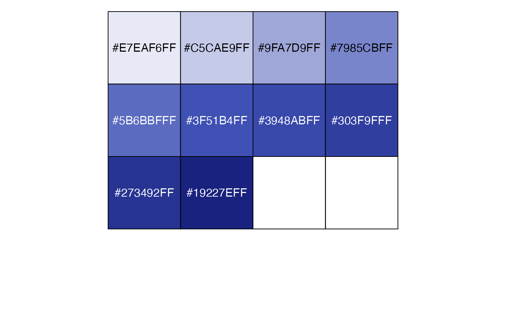
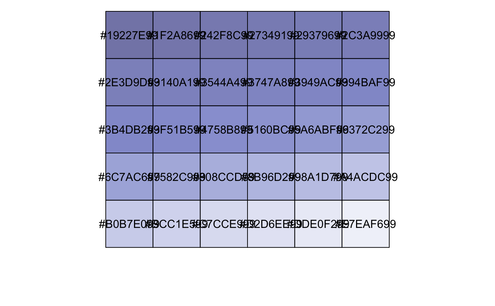

The Material Design color palettes.
pal_material( palette = c("red", "pink", "purple", "deep-purple", "indigo", "blue", "light-blue", "cyan", "teal", "green", "light-green", "lime", "yellow", "amber", "orange", "deep-orange", "brown", "grey", "blue-grey"), n = 10, alpha = 1, reverse = FALSE )
| palette | Palette type. There are 19 available options:
See the material design color guidelines for details. |
|---|---|
| n | Number of individual colors to be generated. |
| alpha | Transparency level, a real number in (0, 1].
See |
| reverse | Logical. Should the order of the colors be reversed? |
Nan Xiao <me@nanx.me> | <https://nanx.me>
